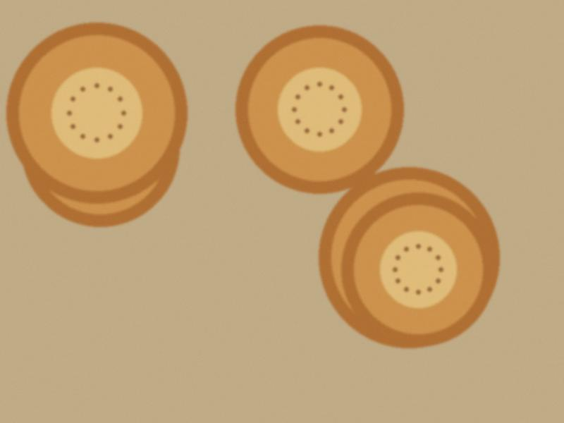

A kümöch recipe, since you asked
The unleavened bread of our liturgy is simpler than people think and harder than it looks.
Dn. Denha · 09 May 2021 · Issue 72 min read

Kümöch from the Saturday bake, still on the hot stone.The kümöch is made by the women's guild every Saturday in the cathedral kitchen. Fine wheat flour, water, a little salt, nothing else, rolled thin and pressed with the old wooden seal that has the cross and the lotus. Baked fast, on the hot stone. If it rises, it is thrown to the birds.
The old rule says the baker must be fasting and silent while it bakes. This is the hardest part for the guild.
1 Comment
My mother was in the guild for twelve years. She says the silence was never kept.
Comments are closed.